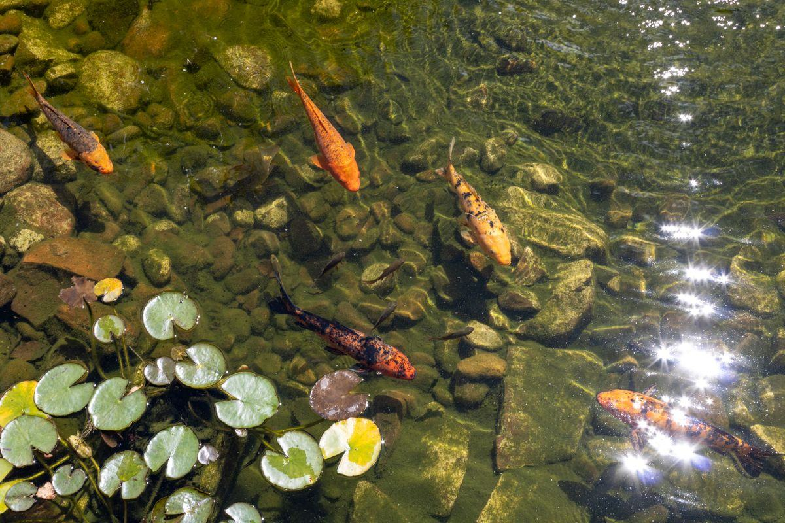

Un bassin à carpes koï n'est pas un bassin d'agrément dans lequel on aurait mis de beaux poissons. C'est un système conçu autour d'eux : 10 000 litres minimum, 1,50 m de profondeur, une filtration surdimensionnée et une aération permanente. Voici les exigences réelles, le budget de 8 000 à 30 000 €, et les erreurs qui coûtent la vie aux poissons.

Tout part d'un chiffre que les débutants découvrent trop tard : une carpe koï achetée à 15 cm atteint 60 à 90 cm en une dizaine d'années, et peut vivre plusieurs décennies. Ce n'est pas un poisson d'ornement au sens où on l'entend pour un poisson rouge, c'est un animal de grande taille, à fort métabolisme, qui produit énormément de déjections et qui fouille le fond en permanence. Toute la conception du bassin découle de là.
Deuxième conséquence : les koï et les plantes cohabitent mal. Elles déterrent les paniers, broutent les jeunes pousses et arrachent les racines. Un bassin à koï est donc généralement plus minéral qu'un bassin d'agrément — les plantes se cantonnent à une zone filtrante séparée, protégée par un grillage ou physiquement isolée du bassin principal.
Un bassin sous-dimensionné n'est pas un bassin moins confortable, c'est un bassin où les poissons tombent malades. Ces chiffres ne sont pas des recommandations de confort.
C'est le seuil communément admis, soit environ 10 m³. On compte ensuite 1 000 litres par koï adulte. Pour une dizaine de sujets, les amateurs expérimentés visent 20 000 à 30 000 litres.
Un grand volume dilue les déchets, stabilise la température et pardonne les erreurs. C'est le meilleur investissement de tout le projet.
Cette hauteur d'eau assure quatre fonctions : l'hivernage au fond en léthargie, une zone fraîche en été, une stabilité thermique générale, et la mise hors de portée des hérons, prédateurs redoutablement efficaces.
Une profondeur insuffisante est la première cause de pertes hivernales chez les débutants.
Le fond doit converger en pente douce vers une bonde de fond qui aspire les sédiments. Sans elle, la vase s'accumule et devient un foyer de pathogènes. Évitez les angles morts où l'eau ne circule pas.
Les bassins à koï aboutis sont souvent en béton ou en EPDM sur structure maçonnée, rarement préformés.
C'est le poste qui distingue radicalement un bassin à koï d'un bassin classique. La charge organique y est plusieurs fois supérieure, et la filtration doit suivre.
Les déjections doivent être extraites de l'eau avant qu'elles ne se décomposent. On utilise des filtres à tamis, à brosses ou à média rotatif, alimentés par la bonde de fond et par un ou plusieurs skimmers.
Le débit de la pompe est le premier repère : elle doit brasser la totalité du volume en une à deux heures, contre quatre à six heures pour un bassin d'agrément. Sur 15 000 litres, cela signifie une pompe de 8 000 à 15 000 l/h en fonctionnement continu.
Le filtre biologique — médias à forte surface spécifique, ou lagunage séparé selon les écoles — héberge les bactéries qui transforment l'ammonium en nitrites puis en nitrates. Son volume doit représenter plusieurs pour cent du volume du bassin.
La lampe UV détruit les algues unicellulaires en suspension et maintient l'eau claire — indispensable quand on veut voir ses poissons. L'aération par diffuseur de fond fonctionne en permanence : les koï consomment beaucoup d'oxygène, et l'eau chaude en contient moins.
Le principe général de l'épuration biologique est détaillé sur notre page filtration & lagunage.
Contrairement à un bassin végétal qui s'autorégule, un bassin à koï demande un suivi de quelques paramètres. Un kit de test et dix minutes par semaine suffisent.
| Paramètre | Valeur recherchée | Pourquoi c'est important |
|---|---|---|
| Température | 18 – 24 °C en saison | Au-delà de 26 °C, l'oxygène chute et le métabolisme s'emballe |
| Oxygène dissous | > 6 mg/L | Le facteur limitant n° 1 en été et lors des pics de charge |
| pH | 7,0 – 8,5, stable | Ce sont les variations brutales qui nuisent, plus que la valeur |
| Ammoniaque (NH₃/NH₄) | 0 mg/L | Toxique dès les premières traces — signale un filtre immature ou saturé |
| Nitrites (NO₂) | 0 mg/L | Très toxiques : bloquent le transport de l'oxygène dans le sang |
| Nitrates (NO₃) | < 50 mg/L | Peu toxiques mais nourrissent les algues — exportés par les plantes |
| KH (dureté carbonatée) | > 5 °dH | Tampon du pH : un KH bas provoque des chutes de pH brutales |
Le point le plus important à retenir concerne le démarrage du bassin. Un filtre neuf n'héberge encore aucune bactérie : il faut quatre à huit semaines pour que le cycle de l'azote s'installe. Introduire une dizaine de koï dans un bassin mis en eau la semaine précédente, c'est provoquer un pic d'ammoniaque et de nitrites qui peut tuer tout le peuplement. On démarre avec deux ou trois poissons, puis on complète progressivement. Le mécanisme complet est expliqué sur notre page fonctionnement biologique.
Deux budgets bien distincts, et le second peut dépasser le premier chez les passionnés.
8 000 à 15 000 € pour un bassin de 10 à 15 m³ en EPDM sur structure maçonnée, avec bonde de fond, filtration complète, UV et aération.
15 000 à 30 000 € pour un bassin de 20 à 30 m³ en béton, avec local technique, filtration multi-étages, chauffage d'appoint éventuel et aménagement des abords.
Le terrassement représente à lui seul 3 000 à 12 000 € : creuser à 1,50 m demande un volume d'excavation important et une évacuation des terres.
Un jeune koï de qualité courante coûte 30 à 150 €. Un sujet de belle taille et de bonne lignée se négocie de 300 à 1 500 €, et les carpes de concours issues d'éleveurs réputés atteignent des sommes sans plafond.
À prévoir aussi : l'alimentation de qualité (150 à 400 €/an pour une dizaine de sujets), l'électricité de la pompe et de l'aération en fonctionnement continu (300 à 800 €/an), et le remplacement périodique du tube UV.
Demander mon devis gratuit Comparer avec une piscine naturelle
Ce sont celles qui reviennent le plus souvent, et qui se soldent presque toujours par des pertes de poissons.
Acheter six koï juvéniles pour un bassin de 5 000 litres, en se disant qu'on verra plus tard. Trois ans après, les poissons font 40 cm et le bassin est invivable. On conçoit pour l'adulte, jamais pour le juvénile.
Introduire tout le cheptel dans les semaines suivant la mise en eau. Le filtre n'est pas encore colonisé, l'ammoniaque et les nitrites montent en flèche. Il faut quatre à huit semaines et une montée en charge progressive.
Les koï réclament en permanence — c'est leur charme et leur piège. Tout ce qui n'est pas consommé en cinq minutes pollue. On arrête complètement le nourrissage sous 8-10 °C : leur digestion s'arrête.
Couper l'aération la nuit ou en canicule pour économiser. C'est précisément aux heures les plus chaudes et la nuit que l'oxygène dissous atteint son minimum. L'aération tourne en continu, toute l'année.
Introduire un nouveau poisson directement dans le bassin. Une quarantaine de trois à quatre semaines dans un bac séparé évite d'importer parasites et pathogènes dans un cheptel sain — et coûteux.
Un héron vide un bassin peu profond en quelques matinées. Profondeur suffisante, bords verticaux et filet ou fil tendu en périphérie sont les seules protections réellement efficaces.
Faire concevoir mon bassin →La conception hydraulique d'un bassin à koï n'a rien à voir avec celle d'un bassin d'agrément. C'est un projet à confier à quelqu'un qui en a déjà construit.
Volume d'eau réel, profondeur au point bas, position de la bonde de fond, débit de la pompe et temps de rotation, volume du filtre biologique, puissance de l'UV, dispositif d'aération et hivernage prévu.
Règle générale : aucune formalité en dessous de 10 m², déclaration préalable de 10 à 100 m², permis de construire au-delà. La plupart des bassins à koï entrent dans la deuxième catégorie. Vérifiez en mairie, le PLU pouvant ajouter des règles. Voir la page réglementation.
AquaJardin Design ne conçoit ni ne construit de bassins. Nous cadrons votre projet en deux minutes puis transmettons votre demande à un seul professionnel partenaire de votre région, qui vous rappelle sous 24 h ouvrées avec un chiffrage gratuit.
Comment nous travaillons →Si votre projet hésite encore entre un bassin à koï, un bassin d'agrément planté et une piscine naturelle, c'est justement le moment d'en parler : les trois n'ont ni la même emprise, ni le même entretien, ni le même budget, et l'arbitrage se fait bien plus facilement avant le premier coup de pelle. Pensez aussi à l'intégration paysagère : un bassin technique bien abordé peut être très beau.
Volume, profondeur, filtration : faites cadrer votre projet avant de creuser.